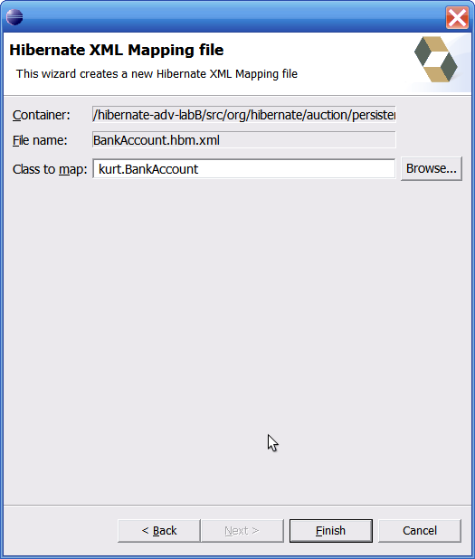

General
FreeMarker!
This is the release were we finally brings in FreeMarker as the template engine, replacing Velocity.
See Hibernate Tools Migration guide for links to easy migration of your custom templates.
This move gives us much better error and exception handling. e.g. users should now actually be able to get an idea what went wrong in built-in templates or their custom templates.
FreeMarker plugin
Bundled FreeMarker plugin
Joe Hudson have developed a new and very much improved FreeMarker plugin which he has agreed to let us bundle with the tools.
Noteable features is syntax highlighting, code completion for context variables and support for macro libraries.

Here is a list of screencasts showing some of the functionallity of the bundled FreeMarker plugin.
Ant
Direct EJB3 packaging support
The ant tasks now support reading mappings as per stated in the EJB3 specification. It removes the need for having a hibernate.cfg.xml to perform tasks like schemaexport, codegeneration etc.
It is done via the ejb3configuration element in the hibernatetool task.
<hibernatetool>
<ejb3configuration/>
<hbm2ddl/>
<hbm2template.../>
...
</hibernatetool>
HQL Exporter
A query exporter is now available via Ant.
It allows users to execute arbitrary queries for quick data export but also basic testing/verification of the mappings.
<hibernatetool>
<configuration .../>
<query destfile="queryresult.txt">
<hql>from User c where u.name like "roed%"</hql>
<hql>from java.lang.Object</hql>
</query>
</hibernatetool>
Wizards
New mapping file Wizard
Basic wizard for creating a skeleton hbm.xml for the current selection.


Visualization
Prettier visualization
The visualization have been brushed up - trying to be less ugly :)

Manual layout
Manual layout is now possible to do on the automated layout.
Reverse engineering
reveng.xml
There have been some minor changes in the format of reveng.xml. Most users should not be affected by it, but if you are look at Hibernate Tools Migration
Naming and exclusion of associations
The core reverse engineering now allow control over how many-to-one and set's will be named, furthermore actual generation of each assocation can be enabled/disabled. See documentation for reveng.xml for examples.
In general more things have been opened up in the JDBCReader and JDBCBinder to allow more control over the reverse engineering. See ReverseEngineeringStrategy, ReverseEngineeringSettings and MetaDataDialect classes.
Efficient schema processing
For large databases the default behavior of scanning all tables can become very inefficient. Thus there is now a schema-selection element in reveng.xml that allows users to control which tables will be scanned.
Code Generation
New UI and exporter extension point
A new ui for the exporters have been added. This UI will be extended in the upcoming versions to support additonal properties/settings.

Exporters can now be contributed to the eclipse UI via an extension point and will be listed in the launch configuration dialog.